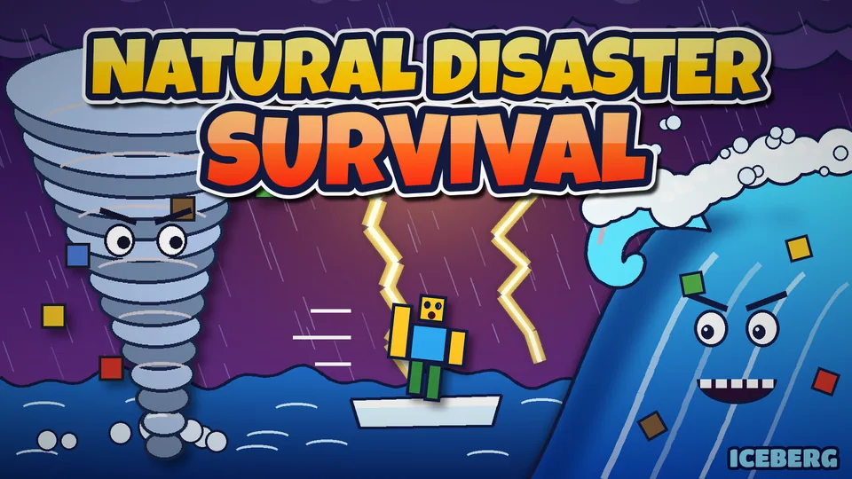

Iceberg
Company news and updates for the icy block sandbox kids and parents love.
❄️ Winterhaven is live Oct 25 – Nov 1, 2026 (America/Phoenix time).
Play IcebergAlso live on the game site (build bbe26f1): Iceberg Plus, ice UI, Sled Rush, Starfall Lake, and new cosmetics — see What's live.
Latest updates
Featured: Natural Disasters

Write-up pending details from the team.